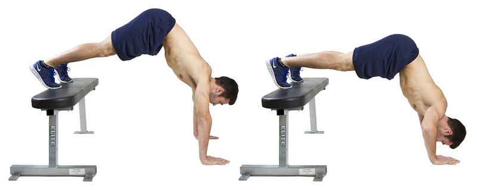
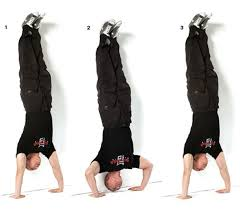
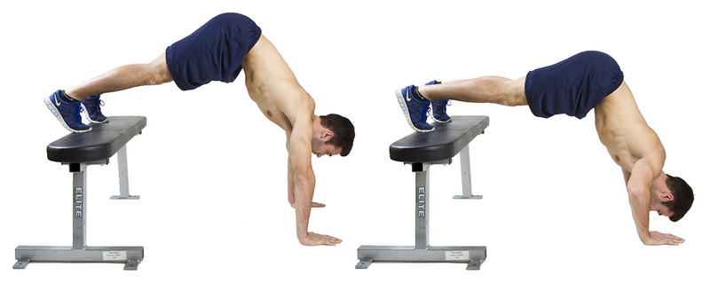
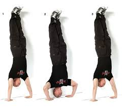

Köpçülik gazanmak üçin 7-8 sagat uklamaly we dogry iýmeli
 2. Has çylşyrymly itergi bermäge, suratda görkezilişi ýaly başlamaga, öwreneniňizde has kyn warianta geçmäge kömek edip, agramyňyzy artdyryp bilersiňiz

3. Bu ikinji dereje 15 rep etmege owrenenson 3 nji dereje gecin

4. Bu üçünji dereje
2. Has çylşyrymly itergi bermäge, suratda görkezilişi ýaly başlamaga, öwreneniňizde has kyn warianta geçmäge kömek edip, agramyňyzy artdyryp bilersiňiz

3. Bu ikinji dereje 15 rep etmege owrenenson 3 nji dereje gecin

4. Bu üçünji dereje